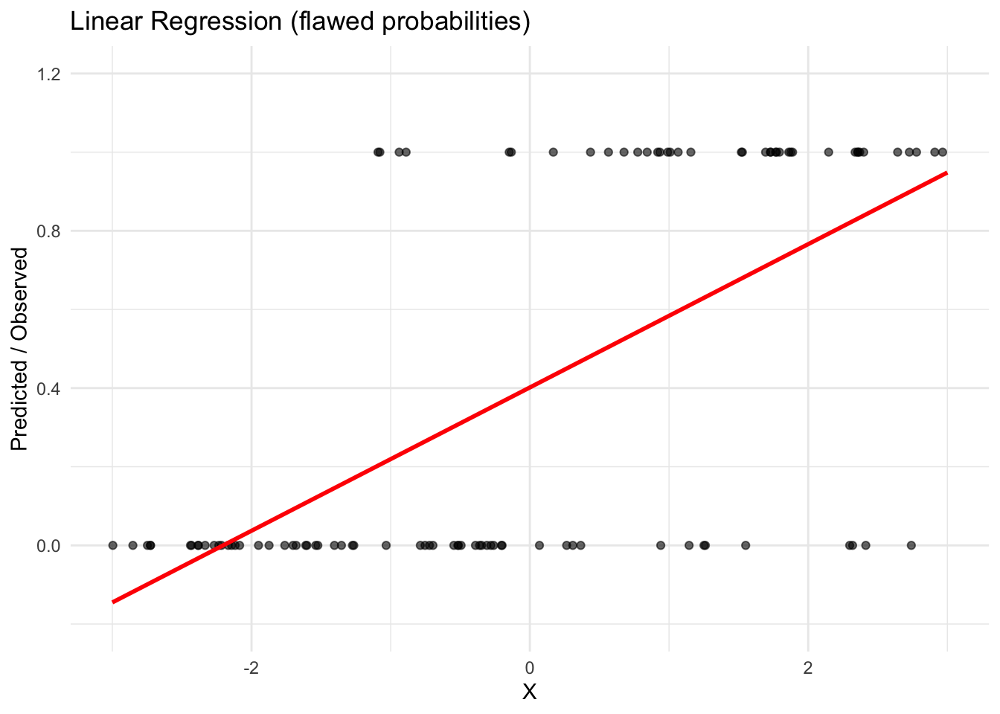
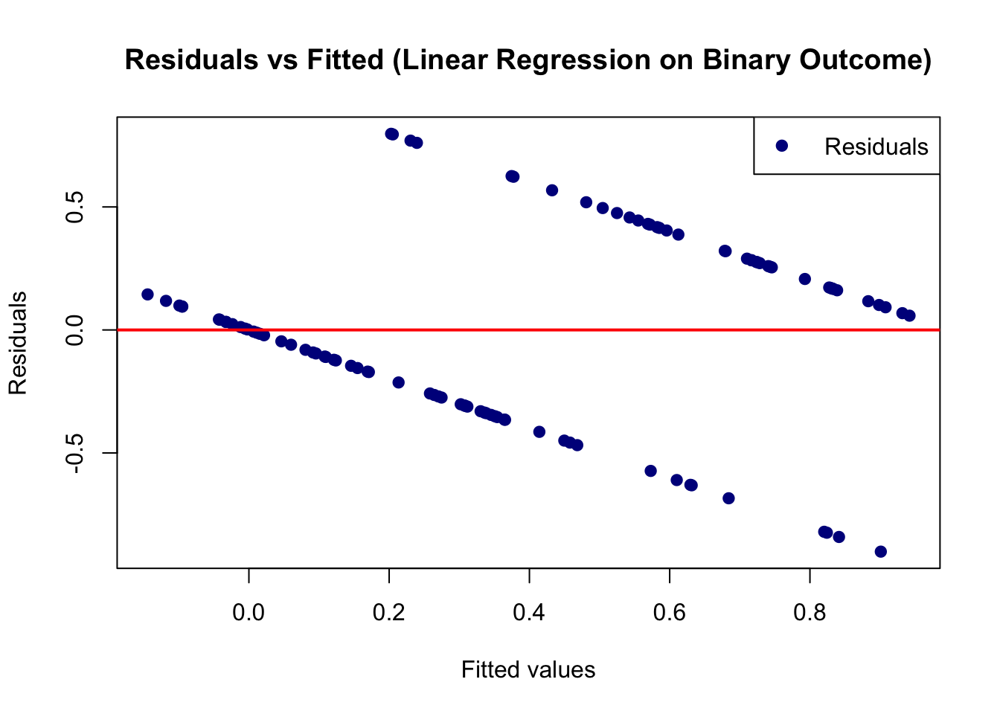

Simple logistic regression is used when the target (outcome) variable is binary (e.g., success/failure, yes/no, 0/1) and we have a single feature (predictor). Instead of modeling the outcome directly, logistic regression models the probability of the event occurring.
\(Y \in {0,1}\) is the binary target variable
\(X\) is the feature (predictor variable)
\(p(x) = P(Y=1 \mid X=x)\) is the probability of success given \(X\)
Overview of Simple Logistic Regression
Suppose we want to model a binary outcome \(Y \in {0,1}\) (e.g., pass/fail, success/failure). At first, we might think of using linear regression:
\[
\hat{Y} = \beta_0 + \beta_1 X
\]
and interpret \(\hat{Y}\) as the probability that \(Y=1\).
Problems with Using Linear Regression for Binary Outcomes
Predicted probabilities outside [0,1]:
Linear regression does not constrain predictions. For some values of \(X\), \(\hat{Y}\) might be negative or greater than 1, which is impossible for probabilities.
Let’s fit a regression to binary data to make this concrete.
# Load librarieslibrary(ggplot2)library(gridExtra)set.seed(123)# Simulate some datan <-100x <-runif(n, -3, 3) # predictorp <-1/ (1+exp(-(-0.5+1*x))) # true logistic relationshipy <-rbinom(n, 1, p) # binary outcomedata <-data.frame(x, y)# Fit linear regression (treat y as numeric 0/1)lm_fit <-lm(y ~ x, data = data)# Create grid of x values for predictionx_grid <-data.frame(x =seq(-3, 3, length.out =200))# Predictionsx_grid$lm_pred <-predict(lm_fit, newdata = x_grid) # linear regression predictions# Plot: Linear regressionp1 <-ggplot(data, aes(x, y)) +geom_point(alpha =0.6) +geom_line(data = x_grid, aes(x, lm_pred), color ="red", size =1) +labs(title ="Linear Regression (flawed probabilities)",y ="Predicted / Observed",x ="X") +theme_minimal() +ylim(-0.2, 1.2) # show that predictions can fall outside [0,1]p1

Non-constant variance (heteroskedasticity):
In binary data, the variance of \(Y\) is
\[
\mathrm{Var}(Y) = p(1-p)
\] which depends on \(p\). Importantly, the spread of residuals will be smallest near \(p=0\) or \(p=1\) and largest near \(p=0.5\). That’s exactly heteroskedasticity. Linear regression assumes constant variance (homoskedasticity), so its assumptions are violated.
Let’s show this visually.
# Extract fitted values and residualsfitted_vals <- lm_fit$fitted.valuesresiduals <- lm_fit$residuals# Plot residuals vs fitted valuesplot(fitted_vals, residuals,xlab ="Fitted values",ylab ="Residuals",main ="Residuals vs Fitted (Linear Regression on Binary Outcome)",pch =19, col ="darkblue")abline(h =0, col ="red", lwd =2)legend("topright", legend =c("Residuals"),col =c("darkblue", "darkgreen"), pch =c(19, NA), lty =c(NA, 2))

Nonlinear relationship between predictors and probability:
In reality, probabilities often follow an S-shaped curve — they change slowly when predictors are very small or very large, and change more quickly in the middle. Linear regression cannot capture this shape.
Can you think of a real-world example where this might happen?
Logistic Regression Solution
Logistic regression fixes these problems by modeling the log-odds of success as a linear function:
Predicted probabilities are always between 0 and 1: \[
p(x) = \frac{1}{1 + e^{-(\beta_0 + \beta_1 x)}}
\]
The variance is modeled correctly.
The S-shaped curve naturally captures how probabilities change with \(X\).
Example Data: Dropout Data
Overview
The Predict Students’ Dropout and Academic Success dataset was contributed to the UCI Machine Learning Repository in December 2021.
It was collected from multiple databases at a higher education institution in Portugal and focuses on undergraduate students across diverse study programs (e.g., agronomy, education, nursing, journalism, management, social service, and technologies).
The dataset is designed for classification tasks:
- Target: Predict whether a student will eventually graduate, remain enrolled without graduating, or drop out.
- Motivation: Enable early identification of students at risk of failure or dropout, supporting targeted interventions.
- Challenge: The outcome classes are imbalanced, which makes predictive modeling more complex.
First, let’s fit an intercept-only model to the data.
Intercept-Only Model in R
In our example the variable Dropout indicates whether a subject dropped out. Let’s start with the simplest model for predicting Dropout, the intercept-only model.
More specifically, we have $ logit(_i) = b_0(1_i)$where \(\pi_i = P(grad_i = 1)\).
We can use the glm() function to fit the model to the data
fit_intercept <-glm( Dropout ~1, family ="binomial", data = dropout)summary(fit_intercept)
Call:
glm(formula = Dropout ~ 1, family = "binomial", data = dropout)
Coefficients:
Estimate Std. Error z value Pr(>|z|)
(Intercept) -0.7482 0.0322 -23.24 <2e-16 ***
---
Signif. codes: 0 '***' 0.001 '**' 0.01 '*' 0.05 '.' 0.1 ' ' 1
(Dispersion parameter for binomial family taken to be 1)
Null deviance: 5554.5 on 4423 degrees of freedom
Residual deviance: 5554.5 on 4423 degrees of freedom
AIC: 5556.5
Number of Fisher Scoring iterations: 4
Without wanting to get to detailed we don’t need to specify the logit link here because it is the canonical link function for the binomial distribution. This essentially means there is a direct correspondence between the predicted mean and the distribution’s canonical location parameter.
Interpretation of the Intercept-Only Model
In the intercept-only model, the intercept, \(b_0\), reflects
The expected log-odds (\(-0.7482\)) of an individual dropping out.
The odds of dropping out \(\mathrm{exp}(b_0)=0.47\).
exp(-0.7482)
[1] 0.4732176
The expected probability (\(0.32\)) of the a subject dropping out.
\[ P(Dropout_i = 1) = \pi_i = \frac{e^{b_0}}{1+e^{b_0}} \] or, equivalently, in R
exp(-0.7482)/(1+exp(-0.7482))
[1] 0.3212136
We can also confirm that the backward transformed parameter from this intercept-only logistic regression matches the expectation we get from the descriptives of the raw data.
mean(dropout$Dropout)
[1] 0.3212025
Note: If \(\beta_j > 0\) then \(\mathrm{exp}(b_j) > 1\), indicating a positive relationship between \(X_{j}\) and the probability of the event occurring. If \(\beta_j < 0\), the opposite relationship holds.
Single-Predictor Model in R
OK, let’s include a predictor in our logistic regression model. Let’s start with Age.at.enrollment such that
\[ logit(\pi_i) = b_0 + b_1Age^{*}_{1i} + \epsilon_i \] where \(\pi_i = P(Dropout_i = 1)\). Here, \(Age^{*}\) is the mean-centered amount of money one spends on themselves in a month (in units of \(100\) dollars).
Let’s fit the model in R.
dropout$Age_star <-scale(dropout$Age.at.enrollment, center =TRUE, scale =FALSE)fit_pred <-glm( Dropout ~1+ Age_star, family ="binomial", data = dropout, )summary(fit_pred)
Call:
glm(formula = Dropout ~ 1 + Age_star, family = "binomial", data = dropout)
Coefficients:
Estimate Std. Error z value Pr(>|z|)
(Intercept) -0.776123 0.033364 -23.26 <2e-16 ***
Age_star 0.068854 0.004364 15.78 <2e-16 ***
---
Signif. codes: 0 '***' 0.001 '**' 0.01 '*' 0.05 '.' 0.1 ' ' 1
(Dispersion parameter for binomial family taken to be 1)
Null deviance: 5554.5 on 4423 degrees of freedom
Residual deviance: 5283.1 on 4422 degrees of freedom
AIC: 5287.1
Number of Fisher Scoring iterations: 4
Interpreting the Single-Predictor Model
Again, There are essentially three ways to interpret coefficients from a logistic regression model:
The log-odds (or logit)
The Odds
Probabilities
Log-Odds
The parameter estimate \(b_0\) reflects the expected log-odds (\(-0.776123\)) of dropping out for an individual who is approximately 23 years old (the average age at admission).
The estimate for \(b_1\) indicates the expected difference of the log-odds of dropping out for a 1-year difference in age. Therefore, we expect a \(0.07\) difference in the log-odds of dropping out for a \(1\) year difference in age.
Odds
Parameter estimates from a logistic regression are often reported in terms of odds rather than log-odds. To obtain parameters in odds units, we simply exponentiate the coefficients. Note that this is just one of the steps of the inverse link function (which would take us all the way to probability units).
In other words, the odds of dropping out for an average-aged student \(exp(-0.776123) = 0.46\).
In regard to the slope coefficient, for 1-year difference in age, we expect to see about \(7\%\) increase in the odds of dropping out. This increase does not depend on the age of the individual. Note this is significant and we would likely report this interpretation. Essentially, if the odds ratio is equal to one, the predictor did not have an impact on the outcome.
Probability
Finally, we can also interpret the coefficients in terms of probabilities.
Remember, probabilities range from \([0,1]\), whereas log-odds (the output from the raw logistic regression equation) can range from \((-\infty,\infty)\), and odds and odds ratios can range from \((0,\infty)\). Due to the bounded range of probabilities, probabilities are non-linear, but log-odds can be linear.
For example, as age goes up by constant increments, the probability of dropping out will increase by varying amounts, but the log-odds will increase by a constant amount, and the odds will increase by a constant multiplicative factor.
For this reason it is not so simple to interpret probabilities in logistic regression from the coefficient directly. Often it is much simpler to plot the probabilities across a range of the predictor variables.
Notice how the density of the observations is visualized by manipulating the transparency (alpha) level of the data points. The predicted curve based on our model has of course a non-linear shape (however, if we were to plot the relationship between the variables with using the logit link, it would be a straight line).